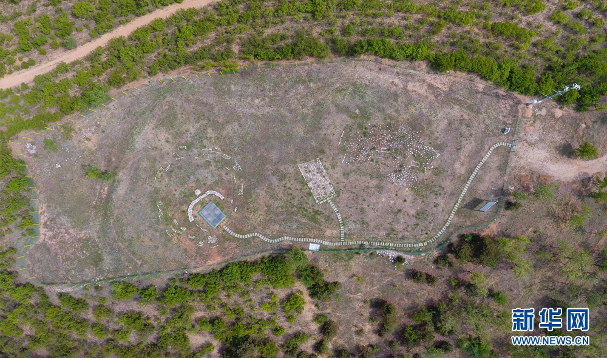
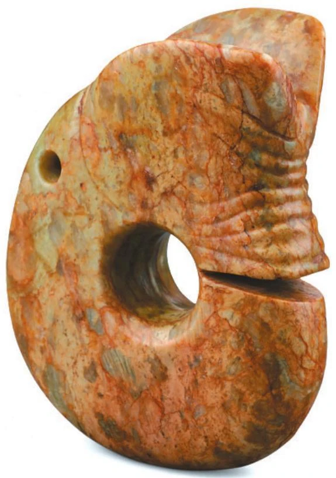
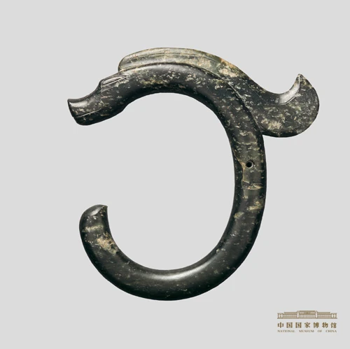
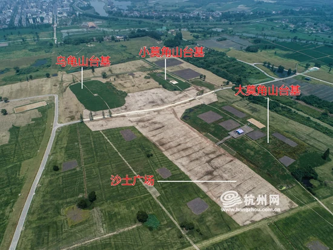
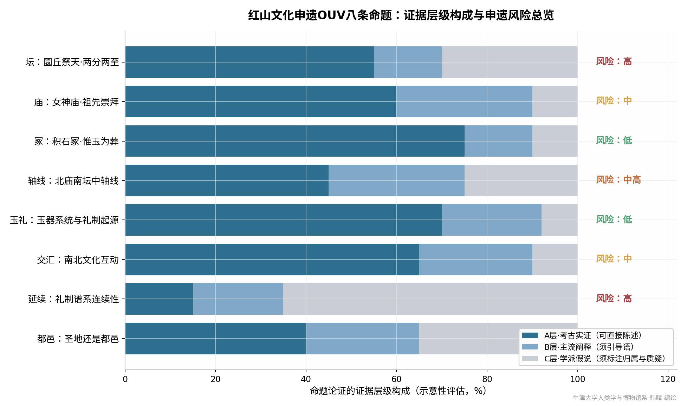
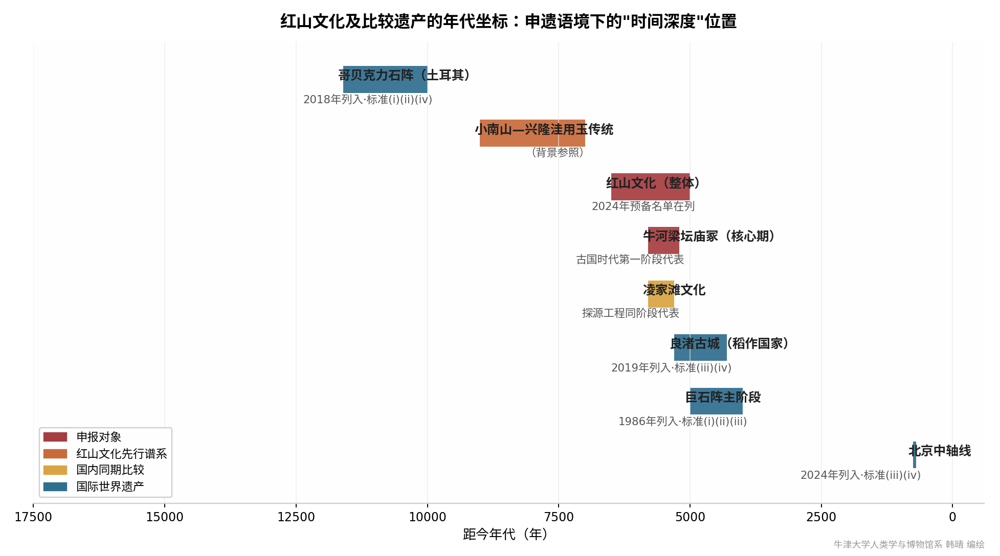
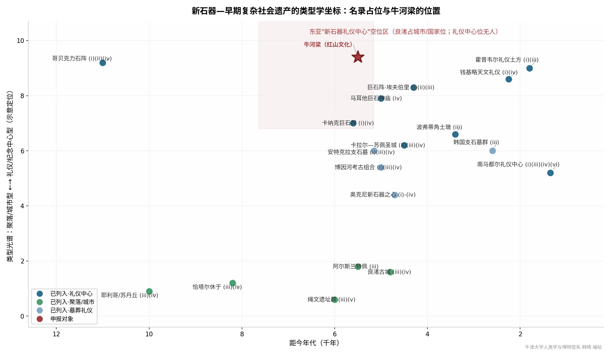
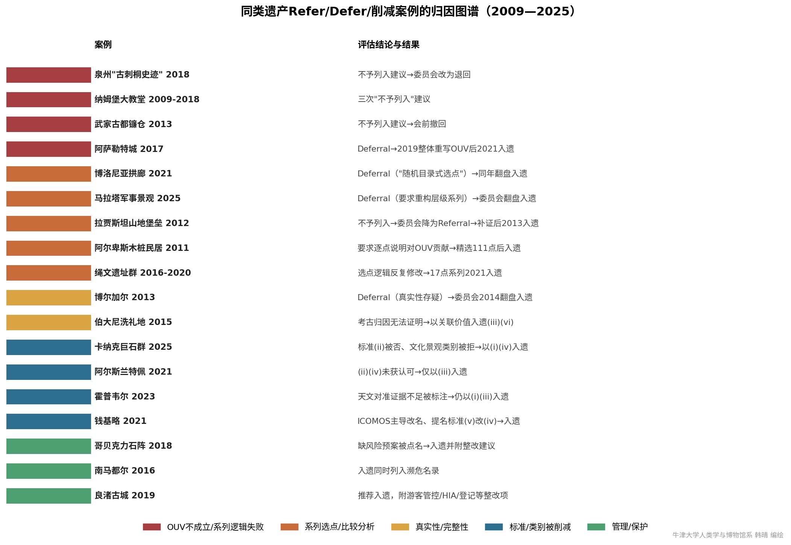

S1 · 程序基线
官方申报与国际文件
UNESCO预备名单、申报文本、ICOMOS评估报告与委员会决议，用于确认申报口径和评审规则。
查看 UNESCO 预备名单第5804号 ↗
以ICOMOS评估机制为镜，梳理18处可比遗产的通过论据与削减记录、五类失败案例的逆向归因，以及八条OUV命题的证据分级与风险转写。这些材料共同回答一个问题：红山凭什么入遗，以及怎样写才不会被砍掉。
本页以项目组《红山文化申遗ICOMOS比较预判研究》和《红山文化申遗OUV命题核验报告》为研究底稿。每项主张先追溯来源，再判断证据等级；公共传播中的说法不能直接进入OUV声明。
UNESCO预备名单、申报文本、ICOMOS评估报告与委员会决议，用于确认申报口径和评审规则。
查看 UNESCO 预备名单第5804号 ↗正式考古报告、同行评议论文和正式刊布的测年数据，是判断考古事实与学术阐释的主要依据。
学者或学派提出的解释必须归属到具体提出者，通常列入B层或C层，不写成无争议事实。
纪录片、媒体报道和网络二次创作只用于识别需要核验或转写的表述，不作为证据分级依据。
探源工程成果和国家文物局通报具有较高权重，同时仍需追溯其背后的正式刊布状态。
限于形制、地层、测年和出土背景等物质遗存描述，并有正式报告、同行评议研究或国家工程正式发布支持，且未见具名实质异议。三项条件必须同时满足。
解释性判断须获得两个以上独立学术来源支持，且没有系统性的具名实证反驳。行文以“学术界认为”“研究表明”等措辞明确其阐释属性。
观点仅属于个人或小群体、存在具名反驳，或仅见于非同行评议渠道，满足任一项即入C层。只能作为研究假说呈现，不能写成确定结论。
一旦出现具名反证，相关表述即降为C层，并同时呈现质疑意见。B层和C层内容不得作为无条件事实直接进入OUV声明。
跨文明坐标和图版中的证据比例属于研究性示意，不是ICOMOS官方分类或统计计量。尚处简报或报道阶段的新发现不按正式刊布证据使用；比较案例主要依据评估报告关键章节、委员会决议和权威二手研究，并非逐字检读全部卷宗。
世界遗产评审不是投票表决，而是一台有固定程序的评估机器：ICOMOS以三支柱检验申报文本，给出四档建议，委员会再做最终裁决。理解这台机器的运转方式，是所有申报策略的起点。
ICOMOS虽然承认纳姆堡大教堂的真实性、完整性与保护管理全部达标，但仍因OUV不成立而三度建议不予列入。OUV是三支柱中唯一具否决权的一柱。
红山实际处于有利位置：积石冢与坛庙遗存未经大规模重建，多数发掘点回填保护。这与绳文"保护性覆土+可移除复原模型"的做法一致，是ICOMOS欣赏的处理方式。
管理问题不阻挡列入，但会以"决定附件要求"写入委员会决议，成为定期报告的长期负债。中国项目在管理侧被要求的整改项通常最多。
文本一次通过。前提是OUV论证、比较分析、选点逻辑全部在送审前闭合。
补交材料即可修复，通常是选点说明、管理文件、比较分析的局部补强。
要求重大重构：OUV重写、系列逻辑重做。历史上委员会对Deferral的翻盘率为47/87。
OUV根本不成立，几乎不可翻盘。泉州2018年即此档，用三年彻底重构叙事才翻身。
ICOMOS就文本疑点发出补充材料要求，是第一轮书面交锋。
Interim Report给出初步关切清单，是修复文本的最后窗口。
所有补证、修订说明提交截止，此后文本冻结。
ICOMOS Panel闭门评议，形成建议档位与决定草案。
评估结论公开，缔约国进入委员会游说期。
21国委员会审议裁决，可维持、降级或翻盘ICOMOS建议。
按ICOMOS《填补空白》报告的类型学—年代区域—主题三重框架，检出名录上全部18处可比遗产。在距今6000—5000年 × 高礼仪性的象限内，东亚完全空白。良渚填的是"早期国家/城市"格，"礼仪中心"格仍然空着。悬停查看每处遗产档案。
左右滑动查看完整坐标图；点按遗产点位可查看图片与档案。
为便于辨认，相邻点位在年代轴上做了一百至两百年内的示意性错开。虚线椭圆内：东亚新石器礼仪中心是名录真空。最危险的撞车不是良渚，而是霍普韦尔（空置礼仪中心）与哥贝克力（最早纪念性），因此红山文本必须主动论证差异：比霍普韦尔多出"等级制度化"，比哥贝克力多出"坛庙冢三合一体系"。卡拉尔—苏佩的"Sacred City"命名先例，则为红山回归"圣地"定位提供了ICOMOS体系内的合法名分。
将2009—2025年间同类遗产的Refer/Defer及标准削减案例按失败原因归因为五类。每一类都对应红山文本的一条写作纪律。点击分类即可筛选。
差距论证只能作为"服务于OUV论证的辅证"，因为泉州判词已经明确："名录存在空白不是列入的理由"。在此约束下，红山可以主张四项名录现存遗产无法提供的属性。
距今5800年前后，女神庙以多室半地穴殿堂容纳真人大至真人三倍的人像群（至少6个个体）。哥贝克力是抽象T形石柱，马耳他雕像属室内陈设，恰塔尔休于无独立偶像殿堂。与此相比，全球同期没有对标，可直接支撑标准(iii)的"特殊见证"。

名录上没有任何遗产以玉器为OUV属性。红山玦形玉龙、勾云形佩、斜口筒形器可上接距今约9000年的小南山—兴隆洼用玉传统，构成全球连续性最长的玉文化证据链。根据霍普韦尔先例，器物是支撑证据，出土情境（context）才是属性。

名录上的早期复杂社会叙事几乎全被"城市—国家"或"纪念物工程"占据。红山展示了通过礼仪信仰整合实现社会等级化的第三条路径：50平方公里礼仪区、10万平方米台基群和600公里外玉料输入，共同说明这里有人群动员能力而无城市设施。

祭坛（天）、偶像庙（祖）、等级墓葬（社会秩序）构成"宇宙观—祖先观—等级制"三位一体。马耳他只有庙，博因河只有墓，钱基略只有观测复合体，奥克尼含定居村落。与此相比，"体系完整性"是标准(iv)下最硬的论据。良渚已占"城市"格，红山必须走差异化。
对2013年预备名单文本（编号5804）的八条核心命题逐条核验：按A层（考古实证）/ B层（学术共识）/ C层（假说推断）分级，标注风险档位，给出转写方案。点击每行展开风险依据与转写建议。
2013年文本保守，因为当时证据有限；2026年的新文本可以更大胆，因为证据底座已经新增9座台基建筑群（约10万平方米）、贝叶斯测年5800BP集中营建和郑家沟古基因组。但大胆的方向必须是往A层证据的方向大胆，而不是往C层假说的方向大胆。
红山文化遗址（牛河梁、红山后、魏家窝铺）是东亚地区新石器时代晚期（距今约6000—5000年）一处独立于聚落之外、经统一规划的大型礼仪中心与制度化玉礼系统的杰出范例。牛河梁遗址以距今5800年前后集中建成的9座台基建筑群为核心，整合了坛（祭天）、庙（祭祖）、冢（葬玉）三类礼仪建筑，构成人类历史上礼仪建筑组合的早期杰出类型；其出土的大型偶像崇拜泥塑群与等级化玉礼器系统，为东亚地区迄今所见年代最早、体系最完整的礼仪制度物质见证。红山文化遗址同时见证了燕山南北多支史前文化的人群流动与价值交流，包括与千里之外长江下游史前社会上层的知识网络。
The Sites of Hongshan Culture (Niuheliang, Hongshanhou and Weijiawopu) constitute an outstanding example of a large-scale, deliberately planned ceremonial centre and institutionalised jade ritual system in Late Neolithic Northeast Asia (c. 6000–5000 BP). Centred on a complex of nine terraced platforms constructed around 5800 BP, the Niuheliang site integrates three categories of ceremonial architecture—altars for heaven worship, a temple for ancestor veneration, and stone mound tombs with jade-exclusive burials—forming an early and outstanding typological ensemble of ritual architecture in human history. Its large-scale anthropomorphic statuary and hierarchically graded jade assemblages represent the earliest and most complete material testimony to institutionalised ritual in East Asia. The property also bears witness to inter-regional human mobility and exchange of values across the Yan Mountain corridor, including long-distance networks with elite communities in the Lower Yangtze region.
程序、文本、证据、管理四条线并行。负面清单教给红山最朴素的一课：在正式申报前，通过上游程序让ICOMOS先介入。拉贾斯坦山地堡垒正是靠ICOMOS咨询任务把"不予列入"扭转为可修复的Referral。
2013年报备文本距今已13年。若新文本的遗产构成、年代框架（5500—5000年 → 6000—4800年）或OUV主张与报备有实质差异，必须先更新预备名单条目，否则ICOMOS将以"遗产构成与报备不符"提出程序性质疑。
充分利用 Upstream Process 与 Preliminary Assessment 机制，正式提名前邀请ICOMOS介入咨询；延续2026年5月北京"红山文化遗址世界文化遗产价值国际专家研讨会"的方向，让最挑剔的眼睛先看过一遍。
红山后（命名地与研究史见证）、魏家窝铺（早中期聚落，与牛河梁分属水系、早数百年）的OUV几乎全部由牛河梁承载，因此必须为每一点写出明确的贡献说明，主动解释年代差与水系分隔，否则就是泉州剧本的史前版。同步编制51处遗址点的分级纳入逻辑。
上朝阳沟（距牛河梁6.5公里、约12万平方米、27座房址）若证实为晚期聚落，可作为"礼仪中心的同期生活剖面"纳入扩展；郑家沟（古基因组实证人群流动）为二期扩展候选；东山嘴等扩展逻辑须在首轮文本中预埋。
跨省（辽宁、内蒙古）统一管理机构的法律授权文件；51处遗址点全覆盖监测体系；N16等飞地点位与主区协调；村庄搬迁与民生补偿；旅游承载量与展示设施遗产影响评估（HIA）；土遗址防风化与排水长期技术路线。
台基建筑群发掘报告、郑家沟遗址报告尚未正式刊布，因此OUV声明引用的每一项新证据，都必须在评审启动前可核验、可引用。管理出版节奏，让证据链与申报时间轴对齐。



